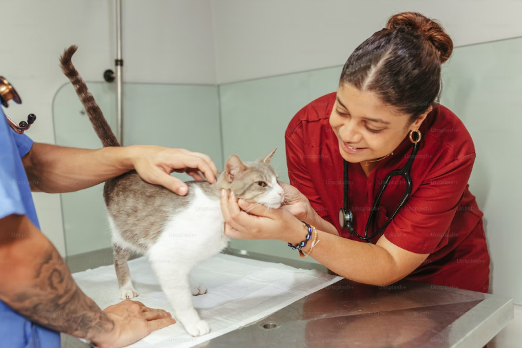

Saiba mais sobre as principais doenças que podem afetar os gatos, seus sintomas, prevenção e tratamento.

Os gatos são animais de estimação adoráveis e carinhosos, mas, assim como os humanos, eles também podem enfrentar problemas de saúde ao longo de suas vidas. É importante estar ciente das principais doenças que afetam os gatos para que você possa identificar os sintomas precocemente e buscar tratamento adequado. Neste artigo, discutiremos algumas das principais doenças que os gatos podem enfrentar.
As doenças do trato urinário são comuns em gatos e podem incluir infecções urinárias, cálculos renais e obstrução uretral. Os sinais dessas doenças podem incluir dificuldade ou dor ao urinar, urina com sangue, aumento da frequência urinária e comportamento de urinar fora da caixa de areia. Se você observar esses sintomas, é importante levar o seu gato ao veterinário imediatamente, pois as doenças do trato urinário podem ser graves e até mesmo fatais.
Os gatos são suscetíveis a várias doenças respiratórias, incluindo rinotraqueíte viral felina, calicivirose e pneumonias. Essas doenças podem ser transmitidas por contato com outros gatos infectados ou por exposição a ambientes contaminados. Os sintomas comuns incluem espirros frequentes, secreção nasal, tosse, falta de apetite e letargia. É importante vacinar seu gato contra doenças respiratórias e mantê-lo em um ambiente limpo e livre de agentes infecciosos.
Problemas gastrointestinais, como gastroenterite, pancreatite e doença inflamatória intestinal, são comuns em gatos. Os sintomas podem incluir vômitos, diarreia, perda de apetite, letargia e perda de peso. A dieta adequada e o manejo do estresse podem ajudar a prevenir e controlar essas doenças. Se o seu gato apresentar sinais persistentes de problemas gastrointestinais, é essencial consultar um veterinário para um diagnóstico preciso e tratamento adequado.
Doenças renais, como insuficiência renal crônica e doença renal policística, são comuns em gatos mais velhos. Os sintomas podem incluir aumento da sede e micção, perda de apetite, vômitos, perda de peso e letargia. O diagnóstico precoce e o manejo adequado podem ajudar a desacelerar a progressão dessas doenças e melhorar a qualidade de vida do seu gato. É importante fornecer água fresca e uma dieta balanceada para manter a saúde renal do seu felino.
A leucemia felina e a imunodeficiência felina são doenças virais que afetam o sistema imunológico dos gatos. Elas são transmitidas principalmente por contato direto com gatos infectados. Os sintomas podem variar, mas incluem perda de peso, fraqueza, febre, infecções recorrentes e tumores. Essas doenças podem comprometer a saúde geral do gato e reduzir sua expectativa de vida. A prevenção é fundamental, e a vacinação adequada pode proteger seu gato contra essas doenças.
Os gatos também estão suscetíveis a infestações de parasitas internos, como vermes intestinais, e parasitas externos, como pulgas e carrapatos. Esses parasitas podem causar desconforto, coceira, anemia e transmitir doenças graves. Manter um programa regular de desparasitação é essencial para prevenir infestações e proteger a saúde do seu gato.
É importante ressaltar que este artigo fornece apenas uma visão geral das principais doenças que afetam os gatos. Cada caso é único, e o diagnóstico e tratamento devem ser realizados por um médico veterinário qualificado. Além disso, a prevenção é a melhor abordagem para garantir a saúde do seu gato. Manter as vacinas em dia, fornecer uma dieta equilibrada, oferecer cuidados adequados e realizar consultas veterinárias regulares são medidas essenciais para garantir uma vida longa e saudável para o seu felino.
Lembre-se sempre de observar qualquer alteração no comportamento, apetite ou aparência do seu gato e agir prontamente ao buscar orientação profissional. Com cuidados adequados e atenção às necessidades de saúde do seu gato, você pode ajudá-lo a desfrutar de uma vida feliz e livre de doenças.